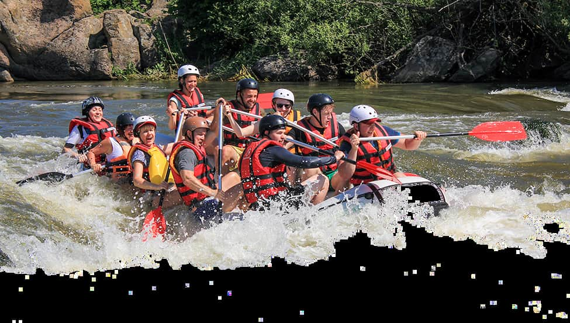

White Water Rafting

White Water Rafting began as a small venture founded by a group of outdoor enthusiasts who shared a
deep passion for adventure and river exploration. Over the years, the company evolved from a single
raft into a renowned name in the rafting industry, earning a reputation for its commitment to safety
and creating unforgettable experiences. It has played a key role in establishing safety standards
and refining training practices, ensuring every trip meets the highest quality. Today, White Water
Rafting offers expeditions for all skill levels, from gentle, family-friendly rivers to exhilarating
Class V rapids, uniting generations of rafters with the thrill of the wild.
History
White Water Rafting began over 60 years ago with a passion for adventure and a love of nature’s wildest
rivers. Founded by a group of avid outdoor enthusiasts, the company started with a single raft and a
bold vision: to make the thrill of river rafting accessible to everyone. Through perseverance and
dedication, White Water Rafting grew, expanding from its humble beginnings to become one of the most
trusted and respected names in the industry. As the company navigated some of the world's most
challenging rapids, it built a reputation for safety, expertise, and creating unforgettable experiences
for adventurers of all skill levels.
Over the decades, White Water Rafting has remained committed to its roots, staying true to the spirit of
exploration while embracing new techniques and technologies to enhance the rafting experience. As
pioneers in the industry, the company helped shape safety standards and training practices, ensuring the
highest levels of quality and care on every trip. Today, our experienced guides continue to share the
thrill of the rapids, from the calm flows of family-friendly rivers to the adrenaline-pumping Class V
challenges. At White Water Rafting, every expedition is not just a journey downriver, but a tradition
that connects generations of rafters to the timeless call of the wild.